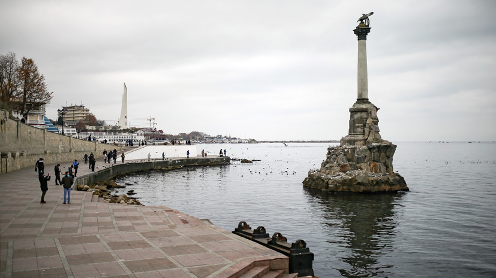

Летающих призраков здесь, конечно, не увидите, но незабываемые впечатления, однозначно, обеспечены! Долина Привидений в Крыму — это десятки каменных фигур, созданных силами природы. Вековые скульптуры имеют причудливые формы и напоминают своими очертаниями, людей, животных и фантастических существ.
Множеством романтичных легенд овеяны два крохотных островка, выступающих изрезанными каменными глыбами из Чёрного моря. Это один из символов Гурзуфа — знаменитые скалы Адалары. Подобно одинокому парусу из стихотворения Лермонтова, они «белеют в тумане моря голубом».

Базилика в базилике — это не тавтология и не опечатка, а официальное название одной из самых любопытных достопримечательностей археологического парка «Херсонеса Таврического», расположенного в нескольких километрах от Севастополя.
Крымский полуостров в общем и окрестности Бахчисарая в частности буквально пропитаны духом истории. Трудно представить сколько этносов и цивилизаций прошло через эти жаркие степи, сколько их здесь зародилось и ушло в небытие.
О нас
интернет-справочник практической информации для туристов. В первую очередь, конечно, о странах — но не только. В нем есть ответы на самые разные вопросы, важные для путешественников.
Категории
Список ссылок
Popular Post

Музей «Михайловская батарея», являющийся частью комплекса Военно-исторических фортификационных сооружений, разместился на северном берегу Артиллерийской бухты — на базе крепости 19 века.
Водопад Суаткан входит в число самых живописных водопадов в Крыму, однако посещают его очень немногие. Причина тому — его расположение, ведь он находится в затерянном месте в скальном разломе, добраться до которого непросто.
,
У юго-восточного подножия вулканического массива Карадаг простирается легендарная страна Коктебель. Заслуженное признание она получила за свои чудесные вина и коньяки